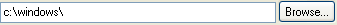

OpenFileControl
(title = "Open", filter = "", width = 30,
file = "", flags = false, status = "", mandatory = false)
Use OpenFileControl when you want the user to enter an existing file name
with the option of browsing for it.

- title
- will display the contained text in the dialog title
- filter
- allows to filter the files names displayed in the dialog
- width
- is multiplied by the average character width
- file
- may contain:
1) a full file path and a file name 2) a full file path to select a directory 3) a file name or 4) nothing
- flags
- sets the Windows Open file dialog options
- status
- allows you to set a text to display as a tip or to appear in the status bar when the field has the focus
- mandatory
- the field must be entered to be valid
The browse button uses
OpenFileName
to bring up the standard Windows Open file dialog.
Methods:
- Set(file)
- to set a file value in field text
- SetFilter(filter)
- to set filter for the files that will be displayed in the dialog
- SetFont(font, size)
- set the font on the field
- SetStatus(status)
- to set a tip for the field
- Get() => string
- to retrive the field text value
- GetFileName() => string
- to retrieve only file name from the field text value
- GetFilePath() => string
- to retrieve only file path from the field text value
- Dirty?(dirty = "") => true or false
- return true when the data is modified
- SetReadOnly(boolean)
- to set read only on the control
flags descriptions
(for more information see Microsoft MSDN)
- OFN.READONLY
- Selects the Open As Read Only check box by default when the dialog opens.
- OFN.OVERWRITEPROMPT
- Generates a warning message if a file name is selected that is already in use, asking whether to overwrite the existing file.
- OFN.HIDEREADONLY
- Removes the Open As Read Only check box from the dialog.
- OFN.NOCHANGEDIR
- After clicked OK, resets the current directory to whatever it was before the file-selection dialog opened.
- OFN.SHOWHELP
- Displays a Help button in the dialog.
- OFN.ENABLEHOOK
- Enables the hook function specified in the lpfnHook member.
- OFN.ENABLETEMPLATE
- Indicates that the lpTemplateName member points to the name of a dialog template resource in the module identified by the hInstance member.
- OFN.ENABLETEMPLATEHANDLE
- Indicates that the hInstance member identifies a data block that contains a preloaded dialog box template.
- OFN.NOVALIDATE
- Disables checking for invalid characters in file names. Allows selection of file names with invalid characters.
- OFN.ALLOWMULTISELECT
- Allows selecting more than one file in the dialog.
- OFN.EXTENSIONDIFFERENT
- This flag is turned on at runtime whenever the selected filename has an extension that differs from DefaultExt. If used in an application, remember to reset it.
- OFN.PATHMUSTEXIST
- Generates an error message if the user tries to select a file name with a nonexistent directory path.
- OFN.FILEMUSTEXIST
- Generates an error message if the user tries to select a nonexistent file.
- OFN.CREATEPROMPT
- Generates a warning message if tries to select a nonexistent file, asking whether to create a new file with the specified name.
- OFN.SHAREAWARE
- Ignores sharing errors and allows files to be selected even when sharing violations occur.
- OFN.NOREADONLYRETURN
- Generates an error message if you try to select a read-only file.
- OFN.NOTESTFILECREATE
- Disables checking for network file protection and inaccessibility of disk drives. Applies only when you try to save a file in a create-no-modify shared network directory.
- OFN.NONETWORKBUTTON
- Hides and disables the Network button.
Applies only if the oldstyledialog flag is on.
- OFN.NOLONGNAMES
- Displays 8.3-character file names only. This flag is only valid if flags also includes oldstyledialog
- OFN.EXPLORER
- Indicates that any customizations made to the Open or Save As dialog box use the new Explorer-style customization methods.
- OFN.NODEREFERENCELINKS
- Disables dereferencing of Windows shortcuts. If a shortcut is selected, assigns to FileName the path and file name of the shortcut itself (the .LNK file), rather than the file linked to the shortcut.
- OFN.LONGNAMES
- For old-style dialog boxes, this flag causes the dialog box to use long filenames.
- OFN.ENABLEINCLUDENOTIFY
- (Windows 2000 and later.) Sends CDN_INCLUDEITEM notification messages to the dialog when the user opens a folder. A notification is sent for each item in the newly opened folder. You can use these messages to control which items appear in the folder's item list.
- OFN.ENABLESIZING
- (Windows 98 and later) Lets the Explorer-style dialog be resized with the mouse or keyboard. By default, the dialog allows this resizing regardless of the value of this option. It is only required if you provide a hook procedure or custom template. (Old style dialogs never permit resizing.)
See also:
SaveFileControl
Example:
Controller
{
Title: 'test'
Xmin: 250 // window width
Ymin: 200 // window height
New(tip = 'file to open') // pass parameters from external
{
// values set at runtime
.of1 = .Vert.OpenFile1 // path of the control
.of1.Set('c:\\Tempfile\\test.txt') // set OpenFile1 field value
.of1.SetStatus(tip) // OpenFile1 field tooltip
// OpenFile1 files filter
.of1.SetFilter('Text Files (*.txt)\000*.txt\000')
}
Controls:
(Vert
(Skip 10)
(Static 'OPEN FILE TEST' font:'MS sans serif' size:14)
(Skip 10)
(OpenFile name: 'OpenFile1'
title: "Open File test",
width:15
)
(Skip 10)
(OpenFile name: 'OpenFile2'
title: "Open File test",
filter: "All Files (*.*)\000*.*\000",
file: 'c:\\Tempfile\\',
status: 'file to open',
width:15
)
)
NewValue(value, source)
{
// value and source returned by a field change
if (source is .of1)
{
Print('OpenFile1 field value is '$.of1.Get())
Print(.of1.GetFilePath())
Print(.of1.GetFileName())
// open the file ...
}
if (source.Name is 'OpenFile2')
{
Print('OpenFile2 field value is '$value)
Print(source.GetFilePath())
Print(source.GetFileName())
// open the file ...
}
}
}